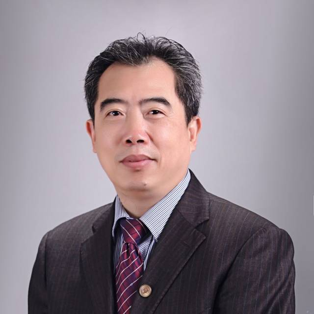
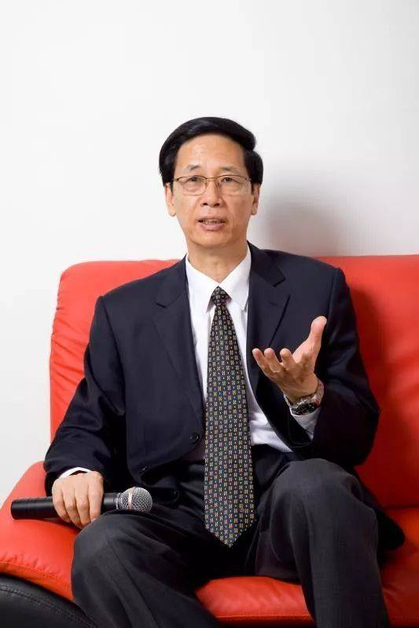
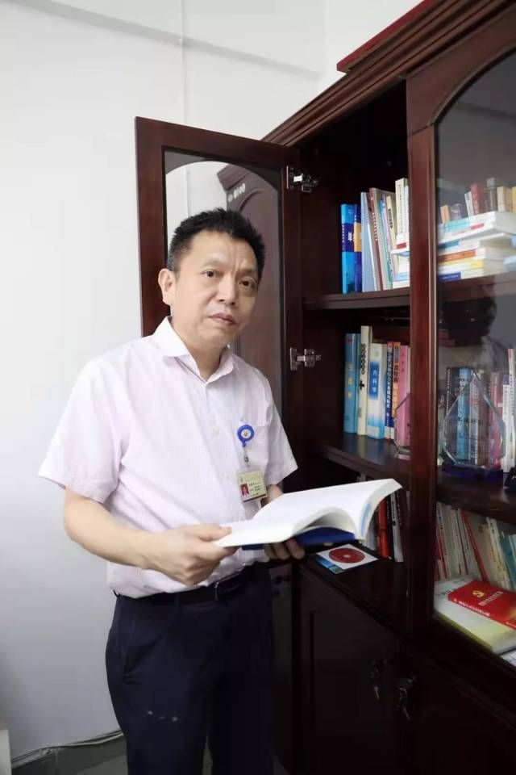
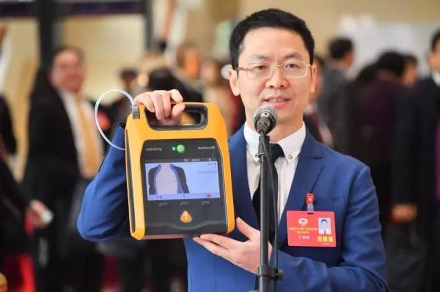
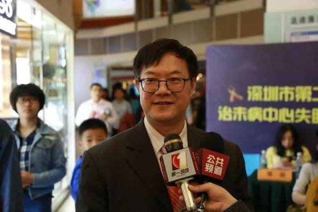
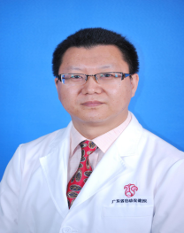
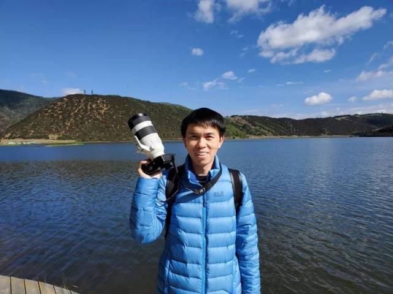
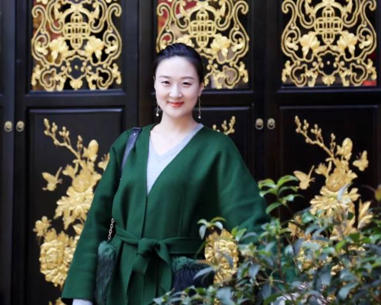

【揭秘】大咖身份首次曝光！科普大赛超强阵容评审团，见证新高度！
因为大赛真是太太太太太火热了！
因此组委会决定
将大赛投稿截止时间延长至
10月13日！！！
今天是倒计时 5 天
你参与了没？
大赛机会难得
赶紧拿起手机投稿吧
没准一不小心
得奖的辣个人就是你
2019年10月8日—11日
广东省健康科普作品创作大赛专家评审阶段开启
也就是说
目前大赛已经进入专家评审阶段啦！！
那么
参与评审的到底有哪些专家呢？
让我们一起来揭开他们的神秘面纱吧！
本次赛事专家专业评审团由13位广东省权威健康科普专家组成，评审过程全程无纸化，系统将隐去各位参赛老师的参赛信息，随机打乱作品顺序交由专家参评，并且此次评审专家的参赛作品仅作展示不参与大赛的奖项评比，绝对的公正公开公开无黑幕哟~~~
专家风采欣赏
汪华侨

职务：中山大学中山医学院教授、博士生导师，《解剖学研究》杂志常务副主编、《中华显微外科杂志》编辑部主任;广东省政协常委、民盟广东省委会副主委、广东省科协常委、广州市越秀区第十六届人大代表等。
简介：荣获中山大学教学名师、第四届广东省教学名师、广东省南粤教坛新秀、广东省优秀硕士学位论文指导教师、中山大学卓越人才资助计划教授、中山大学首届卓越教学名师和全国宝钢教育优秀教师奖等。
兼任中国解剖学会理事、广东省解剖学会理事长、广东省医学会医学科普与健康传播学(医学科普)分会第七届委员会主委、中华医学会科学普及分会第九届委员和第十届常委、中国医师协会医学普分会首届委员和第二届常委、广东省科普作家协会副理事长兼秘书长、广东省脑发育与脑病防治学会副理事长、卫生部继续医学教育委员会学科组成员、广东省省情调查与对策咨询专家库专家、广东省科学道德和学风建设宣讲团专家、国家科技奖评审专家、中华医学会科技奖终审专家、国家自然科学基金评审人、广东省自然科学基金评审专家,教育部和广东省普通高校重点学科、科技成果评审专家,全国科学技术名词定审员会解剖学名词审定委员会委员和大百科全书编写委员会委员,《解剖学报》《中华显微外科杂志》《中华解剖与临床杂志》《广东医学》《Current Alzheimer Research》等10多家杂志编委或审稿人。
在解剖学、基础医学实验教学和研究方面：人体解剖学国家精品课程负责人，获学校优秀教学成果一等奖6项(第1完成人3项) 、二等奖3项，广东省优秀教学成果一等奖4项(第1完成人3项)、二等奖1项(第1完成人)；担任十一五~十三五全国规划教材《基础医学概论》《功能解剖学》(1~3版)和《局部解剖学》(1、2版)主编。主编《医用解剖学标本彩色图谱》《人体解剖学现代学习基础》等20多部教学参考书。
主要研究方向中枢神经退行性疾病的分子生物学发病机制和临床应用解剖学。主持国家自然科学基金、国家高技术研究发展计划课题(863)子课题、国家重点基础研究发展计划(973计划)子课题、国家计划委员会项目分课题、教育部博士点课题和广东省自然科学基金等省部级以上科研项目20余项。获教育部高校科技进步奖自然科学奖二等奖1项、广东省科技进步二等奖、三等奖各1项,广东省优秀教学成果一等奖4项;发表论文180余篇(其中SCI论文50余篇), 主编《骨科临床解剖学》(钟世镇现代临床解剖学全集) 及参编专著20余部,获中国发明专利2项等。参编《人体解剖学名词》(第2版)和中华医学百科全书《人体解剖学》卷。
重要学术研究成果与贡献：
1. 脑老化及其机制的研究:发现老年大鼠下丘脑弓状核神经元、神经胶质细胞和突触及β内啡呔能神经元发生增龄变化，为老年下丘脑-垂体轴生理机能的变化提供了形态学依据。海马与学习记忆关系密切，老年个体和老年性痴呆患者学习记忆能力下降。我们对海马结构的发育和兴奋性氨基酸神经元的发育进行了详细研究, 为脑老化提供了丰富的形态学资料。
2. 外周神经损伤及其修复:研究了靶肌肉注射碱性成纤维细胞生长因子对坐骨神经损伤再生及功能恢复的影响、人胚脊髓提取液对胚鼠脊髓前角运动神经元存活与生长的影响以及胚胎运动神经元移植对失神经肌肉的影响,为临床应用碱性成纤维细胞生长因子提供了新的给药途经。
3.老年性痴呆的实验治疗研究和老年性痴呆的分子生物学诊断方法研究:①老年性痴呆基因分子生物学诊断的研究;②中药治疗老年性痴呆的实验研究;③疫苗治疗老年性痴呆的实验研究。
科普工作
担任广东省医学会医学科普分会主委、中华医学会科学普及分会和中国医师协会医学普分会常委、广东省科普作家协会副理事长兼秘书长、广东省科普宣讲团首批专家、国家健康科普专家库第一批成员、中华医学会和中国医师协会科普作品全国比赛评委, 按要求完成健康科普相关工作。主持广州市科技计划项目(科普专项):广州地区优秀科普作品颁奖大会(项目编号2014KP000057)和广州市科技计划项目(科普与软科学专项):《高新技术科普丛书(第四辑)编写和出版》(项目编号201609010003)。参与编写广州《高新技术科普丛书》(第1-4辑)。编审《不老之泉探秘—干细胞与再生医学》获中国科技部“2012年全国优秀科普作品奖”，2013年广东省委宣传部、省新闻出版局首届南粤出版奖图书奖;参与主编《人与健康》,发表《老人大脑功能降低后的中医说法》《你是否真正属于肥人一族》《胆囊与“一身是胆”》《你知道肾脏是怎样工作的吗？》《人生长河中的“三峡”》、《“鹊桥相会”真不易》(家庭医生.海外版)、《哪些部位能摸到脉搏》(健康世界)等20余篇科普论文;《医学科普作品的写作特点与创作体会》获第17届全国科普理论研讨会优秀论文。
王甲东

职务：广东省科普作家协会理事长、《家庭医生》杂志原总编、教授
简介：中山大学教授
中山大学家庭医生杂志社原总编
中山大学家庭医生健康中心 总顾问
中国健康教育中心专家
中国科普作家协会理事
广东省科普作家协会 理事长
中华生物医学工程杂志常务执行编委
王双苗
职务：广东医科大学第一临床医学院党总支书记、附属医院纪委书记,科普专家
简介：王双苗，研究员，高级经济师，临床医学学士、经济管理学硕士、公共卫生政策与管理学博士，硕士生导师,现任广东医科大学附属医院副院长。中国科协科学辟谣平台专家、人民网“科普中国”科学顾问、中国伦理学会健康伦理专业委员会副主任委员、中国科普作家协会医学科普创作专委会副主任委员、中国医师协会医学科普分会常务委员、中国老年保健协会健康教育与健康促进专委会常委、中国医师协会人文专业委员会青委会副主任委员、广东省生命文化学会副会长、广东卫生经济学会副会长、广东省卫生经济学会健康促进与传播专业委员会主任委员、湛江市医学会健康促进与医学传播学分会主任委员。全国首家义工“幸福银行”创始人，全国高校首开《医学传播学》课程负责人，主编《漫画中国公民健康素养66条》等专著5部，2017年获“中华精准健康传播新闻人物”称号，2019年获中华医学会教育技术优秀成果奖一等奖。
韦建瑞

职务：广州市妇女儿童医疗中心主任（院长）。
简介：二级主任医师，博士生导师，广州市高层次卫生人才医学重点人才。
兼任广东省政协常委，广州市科学技术协会第十届委员会委员，广东省医师协会健康传媒工作委员会主任委员，广州市医学会副会长、广东省健康科普专家。
马晋平
职务：中山大学附属第一医院胃肠外科中心，内镜中心副主任；中山大学附属第一（南沙）医院（筹）副院长。民盟广东省委科技委员会副主任。广东省医学会消化肿瘤分会副主任委员，广东省医学会医学科普学分会常委。
简介：中山大学附属第一医院胃肠外科中心主任医师、教授。曾先后在University of Massachusetts Medical Center、香港大学玛丽医院访问学习。从事胃肠外科工作26年，擅长胃肠肿瘤的腹腔镜微创根治术，包括胃癌、结肠癌和直肠癌的微创和保功能手术。发表核心期刊论文80余篇，其中SCI收录30篇。承担和参与国家自然科学基金、广东省自然科学基金、广东省科技计划项目和广州市科技计划项目多项。曾获中华医学奖二等奖、广东省科技进步二等奖。获国家专利7项。
于2014年创立了医学科普公众号“兰世亭” （微信号：XHBKP2014），坚持每日推送1篇原创医学健康科普文章，至今发表原创科普文章1700余篇，热门单篇阅读量超过15万人次。各个媒体的总浏览量超过1.2亿人次。多篇科普文章发表在《健康时报》、《岭南保健》、《广州日报》、《羊城晚报》、《文汇报》、《家庭医生》、《广东卫生计生报》、《广州卫生》、翼健康、丁香园、《世界科学》等杂志。
2019年荣获 “第二届广东十大科学传播达人”；2019年、2018年连续两年获评“胡润.平安中国好医生”；2019年获腾讯新闻“杰出医学科普作者”；2017年广州电视台和广州市科创委录制《我身边的科技大咖---马晋平》；2017年获得“搜狐自媒体医生领袖奖”；2016年获得“中国健康总评榜年度科普先锋”。
丁邦晗

职务：教授，主任中医师，博士生导师，临床医学博士，广东省中医院急诊大科副主任。中国中医科学院中青年名中医。
简介：兼任广东省中医药学会急诊专业委员会主委、中国中医药研究促进会急诊分会副会长、中华中医药学会急诊分会常委、广东省医学会急诊医学分会副主委、广东省医师协会急诊医师分会副主委、广东省健康管理学会急诊与灾难应急专业委员会副主委等。
作为负责人制订指南1份、专家共识1份；发表论文60余篇，主编专著2部，副主编专著与教材5部，主持省部级以上科研项目7项，获得省部级科技奖5项，2018“荣耀医者-科普影响力奖”获得者。
周光清
职务：南方医科大学南方医院健康管理中心书记、副主任
简介：目前主要从事健康管理方向研究，在城市社区健康管理、健康教育、慢性病管理、中医保健等方面有突出贡献。作为主要负责人之一，带领团队在南方医院率先成立健康管理学科，引领全省乃至全国健康管理学科的发展，赢得社会广泛赞誉。创建出一套治疗颈肩腰腿痛的独特方法，多次给中央领导和军队首长做保健工作，国内16家著名媒体给予了报道。
发表学术论文60余篇，承担国家、省、市科技课题10余项，获得课题经费360余万，并编写相关著作两部。先后荣获各种奖励40余次，其中三等功2次，获得全国“健康管理学科与机构建设个人贡献奖”、“中华健康管理杰出人物”、“中国健康管理社区先进个人”、“全国基层党建工作先进个人”、“广东省卫生系统创先争优先进个人”、“广东省医学会先进个人”、“南方医科大学模范党务工作者及标兵个人”、分获白云区、广州市“敬业爱岗道德模范”等荣誉称号。
目前任清远市珠江健康管理研究院院长，中国健康促进基金会理事、副秘书长、中国健康促进基金会健康管理研究所研究员、中国健康促进基金会城市社区健康管理发展专项基金管理委员会副主任委员、中国健康促进基金会社区与慢病管理专项基金管理专家委员会副主任委员、中国老年健康服务协会健康管理分会常委、中华医学会科普分会委员、中华医学会健康管理学分会健康与评估学组委员、广东省老年保健协会副会长、广东省老年保健协会健康管理专业委员会主任委员、广东省医学会科普分会副主任委员、中国健康管理示范基地评审专家、中华健康管理杂志编委、全科医学杂志编委、医学参考导报编委等学术职务。
邹蔚苓
职务：广东财经大学新闻系副主任，广东省电影家协会会员
简介：广东财经大学新闻系副主任，博士，教师。本科、硕士、博士分别毕业于暨南大学经济学专业、英国伦敦大学新闻学专业、暨南大学新闻学专业。曾在英国BBC和广州电视台任记者、编导及制片人十余年，具有丰富的中西方电视新闻从业经验和扎实的新闻传播理论知识。在传媒类专业教学科研和影视创作方面具有较高造诣。主持参与多项国家及省部级课题，主编出版《全球新闻记者》、《你与世界“媒”距离-新媒体技术与应用》等新闻传播学著作五部。编剧兼导演《相信能》、《过江》等多部影视作品，获国际奖、国家奖等多项。
杨国安

职务：深圳市健康教育与促进中心副主任
简介：深圳市健康教育与促进中心副主任,健康教育专家，资深科普作家。担任深圳市政府重大行政决策咨询论证专家、全国健康促进与教育咨询专家、国家级全民健康素养巡讲专家、中国健康促进与教育协会常务理事、广东省健康教育协会副会长、广东省医学科普学会常委、广东省科普作家协会常务理事、广东省健康教育巡讲导师、广东省科普讲师团首批成员、深圳市健康教育科普专家团专家、暨南大学公共卫生专业硕士（MPH）校外实践导师等社会职务。
长期从事健康教育与健康促进工作、健康科普与健康传播、健康产业研究、健康城市研究、健康项目策划与推广等方面的工作；在搜狐自媒体《健康大家》发布80多篇科普作品，阅读量超1600万人次；在深圳、广州、惠州等地开展健康科普讲座和健康教育授课50多场次，并获邀参加中国农民工家庭与健康讲座、中华预防医学会健康教育培训、珠江健康大讲堂、深圳慈善会等健康科普活动，广受好评，尤其是他的PPT设计制作新、奇、美，富有感染力；多次组织、策划出版健康丛书、学术著作，已发表论文、科普作品500余篇，出版科普著作、丛书和教材40余部，累计560多万字，多次荣获全国和省级优秀科普图书、优秀科普作品奖励，他以丰硕的科普创作和读书成果被国家新闻出版广电总局授予“全国书香之家”称号、广东省委宣传部等4部门授予“广东省十大优秀书香之家”称号,并获得深圳特区30年30户书香家庭奖励。
“我为健康鼓与呼！”
陈广泰
职务：广东省卫生健康委员会政务服务中心办公室主任，健康报记者
简介：广东省卫生健康委政务中心办公室主任，广东省卫生健康委网站与新媒体运维小组组长，广东卫生信息微信公众号主编，广东省健康自媒体联盟（中国医疗自媒体联盟广东分盟）发起人，中国医疗自媒体联盟顾问团专家，中国卫生摄影协会副秘书长、常务理事，新媒体传播分会主任委员、新媒体传播专家组组长。广东省妇幼保健协会宣传教育专业委员会副主任委员，广东省医师协会健康传媒工作委员会副主任委员，《健康报》记者。中国卫生健康传播营销实战专家，2018年全国十大健康传播大使，2019年中国医疗自媒体联盟蝴蝶学院十大金牌讲师。
彭文斌

职务：广东省妇幼保健院医院宣教部主任，中国妇幼保健协会理事、宣传工作委员会主任委员，中国传媒大学媒介与公共事务研究院兼职研究员，上海交通大学健康管理与服务创新中心特邀研究员，国家卫生与健康委员会主管、中华医学会系列科技期刊《国际医药卫生导报》副总编辑，中国医疗自媒体联盟第二届理事会员联合发起人，中国医疗自联盟中国妇幼保健机构分盟发起人、盟主，中国健康管理产学研联盟副理事长机构核心成员，中国粤港澳大湾区大健康产学研联盟筹备组核心心员，广东省健康管理学会理事、常务副秘书长，广东省妇幼保协会理事，广东省健康服务业协会理事、常务副秘书长，广东省健康管理学会健康体检管理专委会副主任委员，广东省妇幼保健协会健康教育与宣传专业委员会主任委员，广东省健康教育协会妇幼健康专业委员会名誉主任委员
简介：1995年开始参与编辑国家核心刊物二十多年，出版二十三卷，五百多期，审阅科技论文十万多篇，发表科技论文二十多篇，写科普文章一万多篇，编辑出版妇幼科普图书1套5册，策划妇幼保健专题片制作十多部，策划拍摄医疗专病专科保健专题片十二集。参与组织和举办全国和国际性学术会议十多场次，省级学术会议五十多次。2013、2014、2015、2016、2017年、2018年连续被中国妇幼保健协会评为优秀通讯员，连续五年获优秀作品奖。2016年荣获“健康管理十年突出贡献奖”、“健康管理十年创新纪念奖”。荣获2017年广东省健康管理学会、广东省健康服务业协会突出贡献先进个人。
毛旭

职务：湖北省宣教中心新媒体部主任，健康湖北主编
简介：毛旭，湖北省卫生计生宣教中心新媒体部部长，湖北省卫生健康委官方微信号（健康湖北）、头条号（健康湖北）、抖音号（健康湖北）等新媒体运维负责人，其负责的健康湖北微信公众号在全国卫生健康系统影响力综合排名名列前茅，多次被评为湖北省十佳政务微信。曾策划并组织实施湖北省卫生计生系统首届宣传干部能力大比武、首届新媒体大赛和湖北省卫生健康系统首届健康科普大赛等三大在全国具有一定影响力的大型活动，其中前两次大赛系全国首创。
兼任中国中医药报湖北记者站站长、健康报驻地记者、中国人口报特约记者，中国卫生摄影协会新媒体分会副主任委员，每年在主流媒体发稿200多篇，其中头版头条20多篇。
赵莹

职务：广东省卫生健康宣传教育中心网络传播科副科长，健康广东主编
简介：先后在香港、国内电视台从事专题片编导工作，从事卫生健康宣传工作近十年，广东广播电视协会会员。目前担任健康广东、健康南粤、广东12320公众号及其矩阵主编。先后获得全国数字电视专题片一等奖，全国家庭与健康宣传教育创新创优大赛一等奖以及屡次获得广东省卫生健康新闻奖等诸多奖项。
本次评审的专家们
将严格按照以下规则来给作品评分↓↓↓
广卫君再和大家强调一遍！！
1.本次大赛专家评审设置回避规则，专家不能评审自己所在单位的作品。
2.评审专家投稿的作品不参与到本次评审中，仅作为展示作品。
怎么样
是不是很期待呢？
以科普之你我
助力健康广东
健康科普传播！投稿走起~
还没投稿的小伙伴
赶紧点击投稿吧！